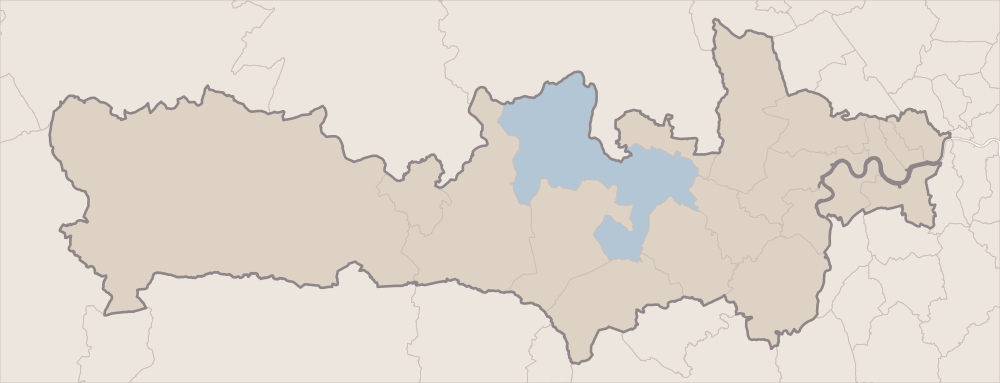

10 Eton Thameside · Digital Billboard Strategy
Twenty miles from Mayfair, with Windsor Castle across the water.
Property
10 Eton Thameside, 15 Brocas Street, Eton, SL4 6FB · United Kingdom
Guide Price
£2,150,000
The Residence
A riverside duplex of 1,887 square feet · 3 bedrooms · 3.5 bathrooms · EPC C
The Setting
Directly on the Thames, with wraparound water views toward Windsor Castle
Where It Is Shown
Berkshire, the Thames Valley and the west of London · eighteen local authorities
Duration
Thirty days, continuous
Prepared for the owner · The plan for the thirty days ahead
The Geography
Berkshire, the Thames Valley and the west of London.
Advertising of this kind is bought by geography rather than by address. The geography chosen for this property is the corridor that runs east along the Thames and the M4 from Eton into west and central London — eighteen local authorities, shaded on the map below and outlined as one shape. The Royal Borough of Windsor and Maidenhead, the authority the property itself stands in, is drawn in blue.
That corridor is not a guess. The Office for National Statistics groups this postcode into the Slough and Heathrow travel-to-work area, a geography it draws from where people actually live and work rather than from any administrative line. The shape on the map takes that finding and extends it in the one direction the property’s own buyer comes from: along the river and the railway, into London.

10 Eton Thameside
Slough
Maidenhead
Bracknell
Ascot
Reading
Newbury
Heathrow
Staines
Weybridge
Richmond
Chelsea
Central London
Windsor and Maidenhead
The Rest Of The Targeted Footprint
Outside The Footprint
Boundaries: ONS local authority districts, 2025 edition
The Eighteen Local Authorities18
Berkshire — six
Windsor and Maidenhead
Slough
Bracknell Forest
Wokingham
Reading
West Berkshire
North-west Surrey — four
Runnymede
Spelthorne
Elmbridge
Surrey Heath
West and central London — eight
Hillingdon
Hounslow
Richmond upon Thames
Ealing
Hammersmith and Fulham
Kensington and Chelsea
Westminster
Wandsworth
Together, 3,384,777 usual residents — ONS, Census 2021, table TS001
How The Location Was Checked
The property’s authority was established from the national record rather than taken on trust. The ONS Postcode Directory places SL4 6FB in the Royal Borough of Windsor and Maidenhead, in the Eton and Castle ward, in the parish of Eton. Testing the same coordinates against the ONS boundary polygons independently returns the same authority and the same ward. Two separate sources, one answer.
The directory returns no administrative county, which is correct rather than missing: Windsor and Maidenhead is a unitary authority, and the six unitary authorities covering Berkshire each stand on their own in the national geography. The campaign is therefore built on named authorities rather than on a county line.
The Argument
The buyer is already on this stretch of river.
A house of this kind is not sold to the whole country, and it is not sold abroad. It is sold to someone who already knows what it is worth to stand on a balcony above the Thames and look at Windsor Castle — and that person is, overwhelmingly, someone who already moves through Windsor, Slough, Maidenhead, Ascot and the M4 towns, or who lives in the west of London and comes out this way. The advertising does not need to travel far. It needs to be present, and repeatedly so, in the ordinary movement of one corridor.
01
A regional campaign, decided as one
This runs across one corridor rather than across the country. A screen in Manchester or Leeds reaches people who will never buy a duplex in Eton; the same delivery concentrated between Newbury and Westminster reaches people who might. Everything outside the eighteen authorities is left to the online advertising, which can afford to cast wider.
02
The view is the advertisement
Three-bedroom homes near Windsor are not scarce. A duplex standing directly on the Thames, with two bedrooms opening onto private balconies over the water and the castle in the frame, is. The advertising leads with the water and the castle, because that is the part nothing else along this river can answer.
03
One idea per screen
A driver or a passer-by has a few seconds. Each frame carries the house, the price, the address and nothing else. No lists of features, no portrait of the agent, no logos competing with the property.
04
One address, everywhere
Every screen ends at the same short web address as the rest of the campaign, so that a glance from a train or a car can be picked up again on a phone that evening.
The Property And The Footprint, In Figures
3 · 3.5
Bedrooms · Bathrooms
18
Local Authorities Targeted
3,384,777
Residents In The Footprint
0.4 mi
To Windsor, Across The Bridge
The Targeting
Chosen by area, not by billboard.
These screens do not work the way poster sites used to. We do not take one sign on one road for a month. They are bought programmatically: we tell the exchange which parts of the corridor to serve the property into, and it places the advertisement on whatever digital screens are available there while the campaign runs. There is no list of screen addresses in this document, and there will not be one. What we choose is the geography.
In practice that means roadside, retail and transport digital screens across the eighteen authorities on the previous page, weighted towards the five areas below.
AreaTargeted GeographyWhy It Is Included
01
Windsor and Maidenhead with Slough · Eton, Windsor, Datchet, Maidenhead, Bray, Ascot
Highest priority
The authority the property stands in, and the one next to it. This is the ground where the house is already a known address, where Eton High Street and Eton Bridge are part of daily life, and where a household moving within the area is most likely to be looking. Ascot sits inside the same borough, five point nine miles south.
02
West and central London · Kensington and Chelsea, Westminster, Hammersmith and Fulham, Wandsworth, Richmond upon Thames
Highest priority
The single most likely origin of this buyer: the London household that wants river, space and a castle out of the window without giving up a direct train. Knightsbridge is under nineteen miles away in a straight line and Mayfair twenty, which is close enough that this is a move, not an emigration.
03
The Heathrow and Thames crossing · Hillingdon, Hounslow, Ealing, Spelthorne, Runnymede
High priority
The ground between Eton and London, and the airport seven miles from the property. The national statistics office draws its Slough and Heathrow travel-to-work area across exactly this ground, because this is where the daily movement is. Presence here is about being seen on the way through.
04
The wider Thames Valley · Wokingham, Bracknell Forest, Reading, West Berkshire, Elmbridge, Surrey Heath
Moderate priority
The rest of Berkshire and the wealthier edge of Surrey, strung along the M4 and the Waterloo line. Lower weight than the inner areas, because a Newbury household is thirty-one miles out — but not absent, because that is a household that already lives in this valley and already trades within it.
05
Southern Buckinghamshire, by postcode district · HP9 and SL9
Steady presence
Beaconsfield and Gerrards Cross, nine and seven miles north. Buckinghamshire is one very large authority reaching far beyond this corridor, so rather than take the whole of it we target only these two postcode districts. It is a small addition, and it is the clearest illustration of how finely this can be drawn.
Where The Emphasis Sits
Areas 01 and 02 take the largest share of delivery: one is the property’s own borough, the other is where the buyer most likely lives today. The Heathrow crossing takes the next share, and the wider valley runs at a lower, steady share so that nowhere in the footprint goes dark.
We would rather run across the whole corridor for the full thirty days at a measured weight than crowd two weeks and then vanish. One consequence of buying this way is worth saying plainly: we cannot promise you a photograph of your home on a named screen at a named junction. What we can tell you, once the month is over, is which parts of Berkshire, Surrey and London saw it, and how often.
Drawn Finely Where It Matters
Where a whole authority is the wrong shape, the targeting is set by postcode district instead: SL4 for Windsor and Eton, SL6 for Maidenhead, SL5 for Ascot and Sunningdale, HP9 and SL9 for Beaconsfield and Gerrards Cross, TW20 for Egham and Englefield Green, SW1X, SW3 and W1K for Knightsbridge, Chelsea and Mayfair.
In A Straight Line
Windsor 0.4 mi · Slough 1.8 mi · Maidenhead 5.4 mi · Staines-upon-Thames 5.5 mi · Ascot 5.9 mi · Heathrow 7.0 mi · Gerrards Cross 7.4 mi · Bracknell 7.7 mi · Beaconsfield 8.7 mi · Reading 15.8 mi · Knightsbridge 18.8 mi · Mayfair 20.0 mi · Newbury 31.3 mi — measured from the property’s own coordinates; straight-line, not journey times.
What Happens Next
The month ahead, in order.
The corridor, the authorities inside it and where the emphasis sits are decided; the reasoning is on the pages before this one. What follows is the sequence. The steps in black are settled and ours to run. The two in grey are figures that do not exist yet, left blank rather than estimated.
01
The Advertisement
Built from the photography of the river frontage, the balconies over the water and the castle beyond, in the Aperture setting used across the rest of the campaign.
02
Your Sign-Off
You see the advertisement and approve it before a single screen carries it. That one sign-off is yours.
03
At The Opening
The campaign opens across all eighteen authorities at once, weighted to Windsor and Maidenhead, Slough and west London.
04
Thirty Days
Continuous through the month that follows, at a measured weight, with no dark weeks and nowhere in the corridor unlit.
05
Impressions
To be confirmed. We will state a figure only once an operator has committed to one in writing, and it will then be the number we are held to.
06
Performance
Nothing measured. The campaign has not begun, so there is nothing here to read yet.
07
At The Close
Once the thirty days are run, a report: which parts of Berkshire, Surrey and London saw the property, and how often — whatever the operators are able to verify.
Two Things That Will Never Appear
No individual screen and no screen count, at any stage. These are not applicable to a campaign bought this way: screens are served programmatically across the targeted areas, and which ones carry the advertisement varies hour by hour with whatever the exchange has available. We cannot promise a photograph of your home on a named sign; we can tell you the geography it ran in.
The Property, Online
Where every screen resolves.
The Rest Of The Campaign
Online advertising runs into the same corridor across the same thirty days; it is set out in its own document.
Your Estate Agent
Toby Madden
Aperture Global
+44 7548 796758
Toby.Madden@ApertureGlobal.com